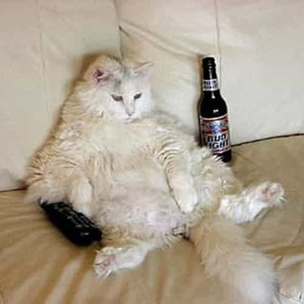
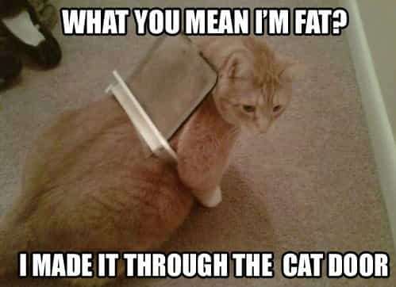
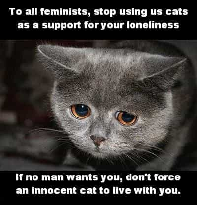
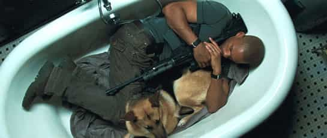
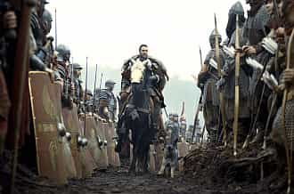
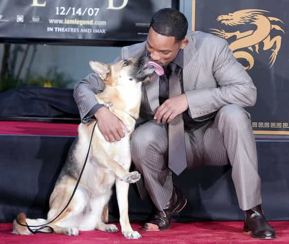
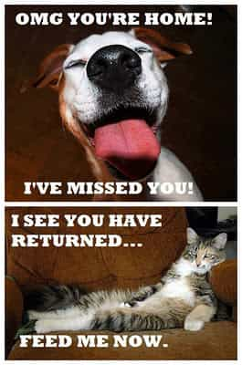
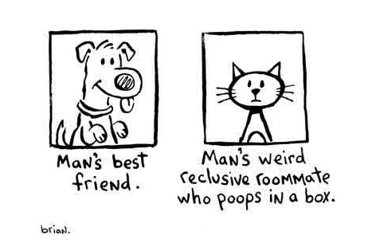

< < < Back
Why Women Are Like Cats And Men Are Like Dogs – Return Of Kings
Let’s revisit this ‘classic’ analogy again.
Even if you feel like it’s…
CATS:
Cats are beautiful creatures. So are women. Especially when it comes to their faces, and more so their eyes. Staring in a cat’s eyes for long, can mesmerize you. So can a woman’s.
Cats are manipulative, prodigal creatures that only want you when they want you. Try picking up a cat at any time, and see how it will scratch you. A cat’s affection for you is essentially an act of investment on it’s end. There is nothing more fake than the dishonest affection of a cat, irrespective of its type. Cats only need affection on their own terms.
Cats know how to insinuate themselves into your affection, even if they are useless creatures. “Aw, look at the poor cute little thing!” A cat is a master at turning its weakness into its advantage. It would meekly rub its soft fur against you to garner attention. It would purr softly and sensually as you stroke it. It snuggles softly into your body, making you believe that it needs and ‘loves‘ you, but what it actually needs is the warmth of your body.
Cats are opportunistic. Cats live on opportunity. They stalk their prey. Women are the same, for they are hypergamous.
Cats are practically useless creatures. On an average, Cats spent 16 hours sleeping and the rest eating and lazing around. Cats can’t defend your home. A cat will only fight to defend itself, but never you. A cat’s life is engrossed with itself, and trying to exploit the resources of its master, without being of use in return. Cats are basically domesticated parasites.

Cats enslave you. A cat’s often ‘purpose’ in your home is to act cute. As mentioned above, they’re practically useless animals. Any home having a cat will be forced to acquiesce itself to its feline member. Essentially humans are the pets of cats, and not the other way around.
Cats are cruel and merciless creatures. Observe a cat with its prey (e.g. with a rat or an insect). A cat will play around with its prey’s half dead body before devouring it, much like a psychopath. Women more or less exhibit the same tendencies.
Cats can fuck up your home. Cats are worst when it comes to your furniture. A cat will happily allow itself to sharpen its claws on your furniture and ruin it.
Cats are insensitive and selfish creatures. Cats don’t think of anything, except themselves. Cats are essentially selfish creatures, except when it comes to their offspring. But a female cat is again never so protective of its young as a bitch is.
Cats are thieving parasites. A cat’s habit of stealing is legendary. The stealth predator that they are, cats will not hesitate to help itself to your stuff without permission. It’s a cat’s entitled nature to your stuff, as you’ve honored yourself by adopting it.
Cats are narcissistic creatures. A cat spends most of its time eating, exploring (to hunt or steal), sleeping, lazing around and preening itself.

Cats have seductive and feminine allure. Look at the graceful movements of a cat. Observe the lazy seductive stretches of its body. Cats are the natural exhibitors of female sex appeal. Any woman wanting to learn seductive female body language could learn well from observing a cat, and carry herself in a similar fashion. Humans have always been seduced by this appeal of these creatures from history.
Cats make valuable pets — to feminists.

Cats are disloyal creatures. As explained above, cats are only loyal to themselves, not to their masters. Cats are essentially mercenaries.
DOGS:
Dogs are honorable and loyal creatures, exhibiting essentially masculine virtues. A dog’s greatest quality is in its loyalty and honor when it comes to their masters. Dogs will always stick with you watch your back.

Dogs are intelligent, versatile and useful creatures. From guarding your home, giving you company and giving hope to humans in a modern world where the word loyalty has just become a tattoo, dogs are versatile pets. You can train a dog like no other animal.
Dogs are brave creatures. A dog’s bravery is legendary. So much that they were employed in war and domesticated to guard homes and livestock .

Dogs are self sacrificing creatures. A dog may run away when it comes to personal safety, but rarely backs down from danger especially when it comes to the safety of its master. A dog will fight for you and can even die for you. A dog’s spirit is essentially that of self sacrifice.
Dogs love doggy style. And so do men. No brainer there.
Dogs are often ignored, in lieu of cats. This happens usually in households where both the creatures are adopted. The dog’s loyalty and value is often ignored for the parasitical, undeserving and useless cat’s seductive appeal. Dispensable beauty often beats indispensable efficiency. This is just like how men—the indispensable gender necessary for the building of civilization—have become dispensable in modern societies.
A master can fool a dog, but not a cat. Dogs are trusting animals when it comes to their masters. Men are the same when it comes to their women. On the other hand, cats don’t trust you, even if you’ve raised them for long. One act of admonishment is enough for a cat to act as if it’s not your pet. Dogs can be fooled, because they’re essentially forgiving animals. Cats rarely forgive, but expect to be forgiven.
Dogs are sensitive creatures. Especially to a lack of love from their masters.
Dogs are direct and honest animals. A dog’s efforts to gain your attention are direct, not a subtle gauged seduction of you like a cat. But the problem with dogs is that they can’t act feminine and cute like cats to gain your attention. Dogs will lick you, bark at you and act funny so that you notice them. That’s how men are. A man’s sex drive and affections are the same – honest and direct. There is nothing deceptive about his interest in a woman than an erection when he sees her.

Dogs bear responsibility and adversity with fortitude. Dogs were domesticated to guard homes. The role of a guardian is a life of responsibility and peril. Dogs are masters at handling both eventualities with fortitude.
Dogs need freedom. One of the worst things people do to their pet dogs is to tie them up. A dog needs to explore and see the world, or it howls and becomes very aggressive. Dogs live for freedom.
Dogs are patient creatures. Until pushed too far. Cats are essentially impatient, and don’t tolerate unwanted attention at all.
Dogs can be easily assuaged. Your dog’s howling for some fresh air and freedom? Give it some food. Rub it. Dogs can be easily assuaged, and usually settle for little from their masters. A cat will move over to your neighbor’s home to find what it’s not getting from you. Dogs are essentially slave-like, while cats are mercenaries.
Dogs need love, and are receptive to affection. Dogs are happy with little, and need your company all the time. A dog without a master is indeed a sad dog.

Dogs are a man’s best friend. Period. A dog will never leave you, even in adverse situations. Men are the same. A man will take a bullet for his loved ones, his country, his tribe or a fellow man.

The biggest analogy? Just like how dogs do all their life, men chase cats, i.e. women. Even with the reversal of gender roles and tastes in the modern world.
Being called a dog and being called a son of a bitch are two different things. While the latter is essentially offensive and derogatory, being called a dog is essentially honorable if you consider the above points. The Mongols honored dogs in their culture. Genghis Khan famously called his commander Subudei “one of his dogs of war” – not in a derogatory sense, but to compliment Subudei on his loyalty, bravery and honor. Calling someone a cat is derogatory when taking a cat’s parasitical personality into consideration. A dog is an honorable and loyal creature, very much displaying the essence of true masculinity. But like men, it ironically gets the flak despite all its usefulness, so much that it’s name itself becomes a curse word.
Beta programming of modern men has often made them to behave in feminine ways like cats, and feminist modern women are behaving like masculinized bitches. Considering that, this analogy could rather be modified as “Why women were like cats, and men were like dogs.”
Read More: Treat Women Like Pets If You Want Them To Stay Attracted To You


{kind=link}
{kind=link}
{kind=link}
{kind=link}
{kind=link}
{kind=link}
{kind=link}
{kind=link}
{kind=link}
{kind=link}
{kind=link}